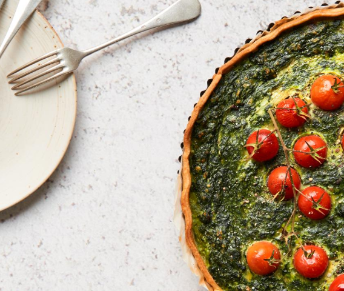

Spinach Tart

An easy to make spinach tart with tomatoes.
Ingredients
- one tablespoon of olive oil
- two onions
- 800 g frozen spinach
- 1 dl single cream sauce
- three eggs
- 60 g grated cheese (Gruyere)
- 1/2 teaspoon of salt
- a little bit of pepper
- rolled out, round cake batter, 32 cm diameter
- 250 g cherry tomatoes
Steps
- Fry the onions in the olive oil for 2 minutes. Add the spinach,
let it get warm while covered. Take the pan away from the cooker.
Stir the cream, eggs and cheese together in a bowl, then mix it with
the spinach in the pan. Add seasoning.
- Roll out the batter on a round, ~30 cm cake tray.
Poke some holes in the floor with a fork.
Spread the spinach mixture and put the tomatoes on top.
- Bake for 35 minutes on the lowest groove in your 220 degrees celsius oven.